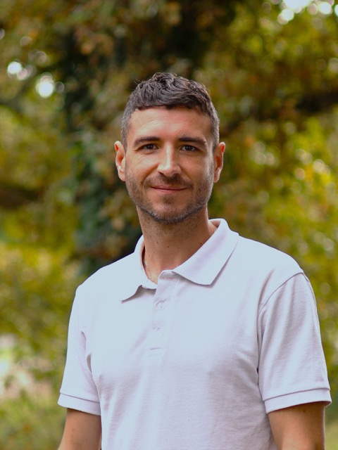

Thibaut Plassot Sansans
PhD Candidate in Development Economics
Bordeaux School of Economics, University of Bordeaux – CNRS
Welcome to my website!
I am a PhD candidate in Development Economics at the Bordeaux School of Economics (University of Bordeaux – CNRS), within the HOPE project, under the supervision of Matthieu Clément and Éric Rougier. My thesis, Peripheral Middle Classes in Latin America: identification, behaviours, perceptions and aspirations, combines the territorial and the social-class dimensions to analyse their joint influence on social mobility, inequality, educational aspirations and expectations, perceptions of insecurity and political behaviour.
Before starting my PhD, I spent ten years in Mexico: first at CONEVAL, the National Council for the Evaluation of Social Development Policy, where I headed the department in charge of designing instruments for the study of poverty, and then at Universidad Iberoamericana, in the Research Chair on Territorial Dynamics and Well-being. In 2025 I was a Fulbright Visiting Scholar at the Stone Center on Socio-Economic Inequality, City University of New York.
My work combines microeconometrics, machine-learning methods and survey design to study inequality of opportunity, social mobility, poverty and socio-territorial disparities.
Research
Peer-reviewed publications
-
2026
Who Reaches the Middle Class in Mexico? Social Mobility and Territorial Inequality Beyond the Rural–Urban Divide Paper
Sobre México. Temas de Economía, 1(14), 38–82 -
2025
Bridging the Gap: Educational Aspirations and Expectations in Latin American Intermediate Territories Paper
Oxford Review of Education, 52(3), 385–403 -
2025
A Common Framework to Analyze Social Mobility and Inequality of Opportunity. An Application to the Core and Peripheral Areas of Chile, Colombia, and Mexico Paper
The Journal of Development Studies, 61(7), 1110–1125 - 2024
-
2022
Inequality of Opportunity in Mexico and its Regions: A Data-Driven Approach Paper
The Journal of Development Studies, 58(9), 1857–1873 -
2021
Ocupación de jóvenes en México entre 1992 y 2018: estudiar, trabajar, ambos o ninguno Paper
Sobre México. Temas de Economía, (4), 39–83 -
2019
Transformaciones en los ingresos de los hogares mexicanos, 1992–2018
Economía UNAM, 16(48), 19–54 -
2017
Migraciones internas: un análisis espacio-temporal del periodo 1970–2015
Economía UNAM, 14(40), 67–100
Working papers
- 2023
-
2023
Dynamic Clusters and the “Hidden Middle” in Mexico’s Agri-Food Supply Chain: Productive Structure, Territorial Factors, and Wages of Workers and Producers in MSMEs
RIMISP, INCATA Working Document -
2022
A Random Forest Approach of the Evolution of Inequality of Opportunity in Mexico ECINEQ
ECINEQ Working Paper Series, 2022-614 -
2022
Agri-Food Value Chains in Urban-Rural Areas of Mexico: Case Studies of the Chili Pepper, Milk, Tequila, and Walnut Chains
Sobre México Working Paper Series, 2022-002 - 2019
Book chapters and reports
-
2023
Nuevas narrativas para una transformación rural en América Latina y el Caribe: hacia una medición y caracterización renovada de los espacios rurales Chapter IV
Chapter IV: The rural and the urban in Mexico: a new categorization based on national statistics (with Isidro Soloaga and Moisés Reyes). Chapter V: Measurement and characterization of rural areas based on national statistics: a practical application in Panama (with Isidro Soloaga, Yannick Gaudin, Moisés Reyes and Sara Hess). -
2019
Informe de Movilidad Social en México 2019. Hacia la igualdad regional de oportunidades Report
Centro de Estudios Espinosa Yglesias (CEEY) -
2014
Development of a Protocol for the Compilation of Local Experiences in Adaptation to Climate Change in Productive Systems
National Institute of Ecology and Climate Change (INECC), Mexico
Press articles
-
2025
Cuando el desarrollo expulsa: de la ciudad recuperada a la ciudad negada Article
Este País, no. 415, December 2025 -
Forthcoming
Mérito con código postal. Aspiraciones altas, oportunidades desiguales
Este País (accepted)
Peer review
American Economic Journal: Applied Economics · Journal of Demographic Economics · Sobre México · Humanities and Social Sciences Communications · Estudios Demográficos y Urbanos · Archives of Public Health · Mondes en Développement
Talks & Conferences
-
Dec 2025
Social Mobility into the Middle Classes and the Influence of the Territory Second WAPLAC Workshop (Welfare and Policies in Latin America and the Caribbean): Dialogues on inequality, wellbeing and structural transformation — Quito, Ecuador
-
Oct 2025
Social Mobility into the Middle Classes and the Influence of the Territory 11º Congreso Anual de Economía y Políticas Públicas Sobre México — Mexico City, Mexico
-
Jul 2025
Mapping Inequality of Opportunity in France and its Regions Eleventh ECINEQ Meeting — Washington, D.C., USA
-
Jun 2025
Social Mobility and Inequality of Opportunity in Mexico, 2017–2023: How Territory Shapes Life Chances Second International Conference on Inequalities and Opportunities — Bari, Italy
-
2025
Mapping Inequality of Opportunity in France and its Regions Stone Center on Socio-Economic Inequality, City University of New York — New York City, USA
-
2025
Reunited? Post-conflict Attitudes Toward Ex-combatants in Colombia Bordeaux School of Economics — Bordeaux, France
-
2024
Food Prices and Income Poverty in Mexico: Regional Estimates Sobre México Conference — Mexico City, Mexico
-
2023
Bridging the Gap: Aspirations, Expectations, and the Feasibility Gap in Latin America Sobre México Conference — Mexico City, Mexico
-
2023
A Random Forest Approach of Inequality of Opportunity Tenth ECINEQ Meeting — Aix-en-Provence, France
-
2022
A Random Forest Approach of Inequality of Opportunity Sobre México Conference — Mexico City, Mexico
-
2021
Inequality of Opportunity in Mexico and its Regions: A Data-Driven Approach Ninth ECINEQ Meeting — online
-
2019
Aspirations and Expectations of Youth in Chile, Colombia and Mexico RSA 2019 Latin America Division Conference — Bogotá, Colombia
-
2019
Social Mobility and the Territory International Seminar on Well-being and Territory — Mexico City, Mexico
-
2019
Intergenerational Social Mobility and Inequality of Opportunities in Mexico Sobre México Conference — Mexico City, Mexico
-
2018
Intergenerational Mobility in Rural-Urban Territories: The Case of Chile, Colombia and Mexico HDCA 2018 Conference — Buenos Aires, Argentina
-
2017
What Governability for the Mexican Countryside? IASC Conference: Practicing the Commons — Utrecht, Netherlands
Teaching
-
2022–2024
Statistics — Teaching Assistant University of Bordeaux, Bordeaux School of Economics
-
2021–2022
Statistics and Econometrics — Teaching Assistant to Isidro Soloaga Universidad Iberoamericana, Mexico City
-
2016–2017
Rural Economics — Teaching Assistant to Gustavo Gordillo National Autonomous University of Mexico (UNAM), Mexico City
Experience & Education
Professional experience
-
2017–2022
Researcher, Research Chair on Territorial Dynamics and Well-being Universidad Iberoamericana, Mexico City
- Responsible for household surveys, including the 2018 Survey on Territories and Well-being (4,000 households)
- CEPAL–FIDA project on the characterization of rural spaces
-
2014–2017
Department Head, Design of Instruments for the Study of Poverty National Council for the Evaluation of Social Development Policy (CONEVAL), Mexico City
- Indicators and measurement of multidimensional poverty
- Development of a gender indicators system: Pobreza y género en México: hacia un sistema de indicadores (CONEVAL, 2016)
-
2014–
Consultant
- RIMISP, Latin American Center for Rural Development: Transforming Territories programme
- National Institute of Ecology and Climate Change (INECC): protocol for compiling local experiences of adaptation to climate change in productive systems
- CIRAD: SELINA and PESMIX projects on payments for environmental services
Education
-
2022–
PhD in Development Economics Bordeaux School of Economics, University of Bordeaux (HOPE project). Supervisors: Matthieu Clément and Éric Rougier
-
2025
Fulbright Visiting Scholar Stone Center on Socio-Economic Inequality, City University of New York (CUNY)
-
2013–2014
M.Sc. in Sustainable Development Economics CERDI, Université d'Auvergne, Clermont-Ferrand
-
2009–2011
M.Sc. in Development Economics Université Montesquieu Bordeaux IV (exchange semester at CIDE, Mexico City)
Skills
Programming: R, Stata, Python
Survey software (CAPI): Survey Solutions, SurveyCTO
Tools: LaTeX, QGIS, SPAD
Languages: French (native), Spanish (fluent), English (fluent)
Contact
- thibaut.plassot-sansans@u-bordeaux.fr
thiplass@gmail.com - Profiles
- Google Scholar · ORCID · ResearchGate · BSE page
- Office
- Bordeaux School of Economics (BxSE)
Université de Bordeaux
Avenue Léon Duguit, Bât. H2, office H2-205
33608 Pessac Cedex, France